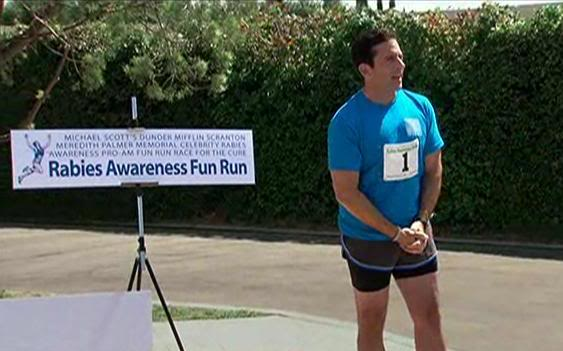

Michael Scott, gerente de Dunder Mifflin Scranton organiza la primer carrera contra la rabia: "Carrera Divertida Pro-Am de Concienciación sobre la Rabia de Celebridades Meredith Palmer Memorial de Dunder Mifflin Scranton, de Michael Scott, Carrera por la Cura".
En un esfuerzo por promover la salud, el bienestar y la unidad del equipo, Michael Scott, gerente regional de la sucursal de Scranton, organizó recientemente una carrera con un propósito muy especial: apoyar la lucha contra la rabia. La iniciativa buscó no solo concientizar sobre esta peligrosa enfermedad, sino también fomentar la participación activa de los empleados en una actividad diferente y divertida.
La carrera tuvo lugar en las inmediaciones del edificio de la oficina, con obstáculos y retos improvisados que añadieron un toque de diversión y competencia sana entre los colaboradores. Dwight Schrute, fiel a su espíritu competitivo, se tomó la carrera muy en serio y llegó a implementar su propio entrenamiento previo. Mientras tanto, otros como Jim Halpert aprovecharon para compartir bromas y provocar un ambiente relajado.
Además de la actividad física, Michael aprovechó para enfatizar la importancia de la prevención y la información sobre la rabia, asegurando que la empresa está comprometida con el bienestar integral de todos sus empleados y la comunidad. Esta singular iniciativa quedará como un recuerdo más dentro de las muchas anécdotas que hacen de esta oficina un lugar único para trabajar.
Al final del evento, aunque no todos llegaron primeros ni marcando récords, el verdadero triunfo fue la unión y el buen ánimo que se vivió durante la jornada. La carrera organizada por Michael Scott no solo cumplió con su objetivo de apoyar una causa importante, sino que también reforzó la camaradería que caracteriza a la oficina de Dunder Mifflin Scranton.